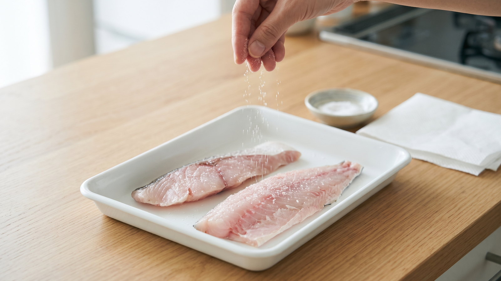

魚へ塩を振って少し待つ｜臭みではなく水分を動かす工程
焼き魚を作るとき、生の切り身に塩を振って「10〜20分ほど置く」という下ごしらえをよくしますよね。「臭みを取るため」と覚えている方も多いかもしれませんが、待っているあいだ、魚の表面では何が起きているのでしょうか。
実はここで起きているのは、「表面の水分を外へ引き出し、塩を身の中へ届ける」という水と塩の入れ替わりです。臭いを消すというより、水分を動かす工程だと考えると、台所でのひと手間がとてもわかりやすくなります。
水と塩が入れ替わる仕組み
切り身に塩を振ると、まず魚の表面にあるわずかな水分に塩が溶けて、とても濃い塩水ができます。
すると、濃さを同じくらいにならそうとする自然の働きで、身の内側にある水分が表面の濃い塩水に向かってじわじわと引き出されていきます。それと交代するように、塩が身の中へと入っていきます。
満員の電車から外のホームへ人が押し出され、空いたところへ新しい人が乗り込んでいくようなイメージです。
このとき知っておきたいのが、塩を振る場所です。魚の皮には脂の層があり、塩が中へ入るのを邪魔してしまいます。皮側だけにしっかり塩を振っても中まで味が入りにくいため、味をなじませたいときは身側を中心に振るのが近道です。
焼き上がりの差は「水気を拭くこと」
この仕組みがわかると、一番大切な作業は「塩を振ること」と同じくらい、「表面に出てきた水分をしっかり拭き取ること」だと分かります。
表面に浮き出てきた水分には、身から出た余分な水分が含まれています。「臭みが取れた」と感じることがあるとすれば、塩そのものが臭いを消したというよりも、染み出た水分をペーパーで一緒に拭き取ったことで起きる結果と考えられます。
この水分を残したまま焼いてしまうと、魚自身の水分で表面が蒸されたようになってしまい、なかなか焼き色がつきません。焼く前にペーパーで水気をしっかり押さえておくと、表面に焼き色がつきやすくなり、身も崩れにくくなると考えられます。
今夜できる手順
さわら、生鮭、生たらなど、塩をしていない生の切り身を使った目安の手順です。
材料の目安
* 生の切り身（さわら、生鮭、生たらなど）：2切れ（1切れ80〜100g程度） * 塩：小さじ1/3程度（切り身全体の重さのおよそ1%）
※健康のための目安として、「日本人の食事摂取基準（2025年版）」では、1日の食塩摂取目標量を成人男性7.5g未満、成人女性6.5g未満としています（農林水産省）。毎日の献立に合わせて調整してください。
手順
- 切り身の水気を軽く拭く
パックから取り出したら、まず表面についた水分をキッチンペーパーで軽く拭き取ります。
- 身側を中心に塩を振る
バットなどに並べ、味の入りやすい身側を中心に、少し高い位置から均一に振ります。皮側は薄く振る程度で十分です。
- 冷蔵庫で10〜20分置く
ラップをかけて、必ず冷蔵庫に入れます。家庭の冷蔵庫は10℃以下に保つのが目安で、細菌の多くは10℃以下で増え方がゆっくりになります（厚生労働省）。魚から出た汁が他の食品につかないよう容器に入れ、生の魚を触った手や、使ったまな板・包丁は、生で食べる野菜などを扱う前にしっかり洗ってください。
- 表面に出た水分を拭き取る
冷蔵庫から取り出し、表面に浮き出てきた水分をキッチンペーパーで上から優しく押さえるようにしっかり拭き取ります。
- 中心までしっかり火を通す
身が白く不透明になり、骨の近くまで熱が通るまで焼きます。料理で使う程度の塩分ではアニサキスなどの寄生虫は死なないため、中心部までしっかり加熱する（70℃以上、または60℃で1分）ことが大切です（厚生労働省）。調理の際に目で見て取り除くことも予防につながります。
普段のおかず作りへの応用
「塩は水分を引き出す」という考え方は、毎日の料理のいろいろな場面に当てはまります。
* 鶏肉や豚肉を焼くとき：焼く少し前に塩を振り、表面に出てきた余分な水分を拭いてから焼くと、水分に邪魔されず焼き色がつきやすくなると考えられます。 * 野菜の塩もみ：きゅうりやキャベツに塩を振ると水が出てくるのも、野菜の中の水分が外の塩に引っ張られて出てくる同じ仕組みです。 * 作り置きのおかず：炒め物や和え物が時間が経つと水っぽくなってしまうのも、調味料の塩分によって食材の水分が後から外へ引き出されるためと考えられます。
まとめ
魚に塩を振って待つ時間は、「臭み消しの待ち時間」ではなく、「余分な水分を外へ出し、塩を身の中へ届ける時間」です。
身側を中心に塩を振り、冷蔵庫で少し置き、出てきた水分をきちんと拭き取ってから焼く。水と塩の動きを意識して水分を拭いておくだけで、焼き色がつきやすく、崩れにくい仕上がりにつながると考えられます。今夜のお魚料理で、ぜひ試してみてください。
---
参考資料
* 厚生労働省「家庭でできる食中毒予防の6つのポイント」: https://www.mhlw.go.jp/www1/houdou/0903/h0331-1.html * 厚生労働省「アニサキスによる食中毒を予防しましょう」: https://www.mhlw.go.jp/stf/seisakunitsuite/bunya/0000042953.html * 農林水産省「食塩の取りすぎに注意（日本人の食事摂取基準2025年版）」: https://www.maff.go.jp/j/syokuiku/minna_navi/topics/topics5_04.html